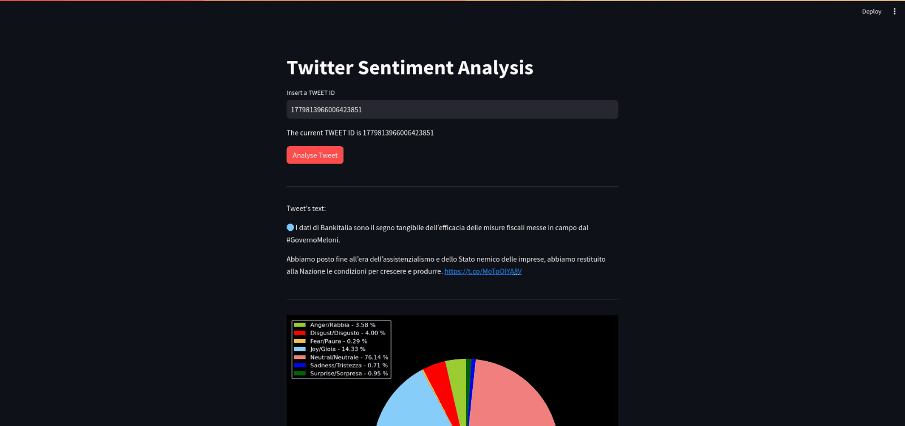
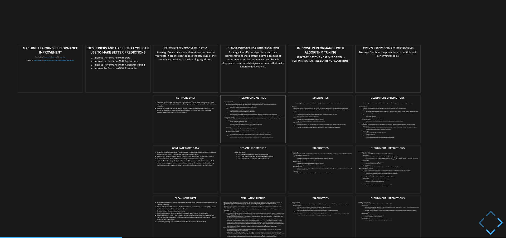
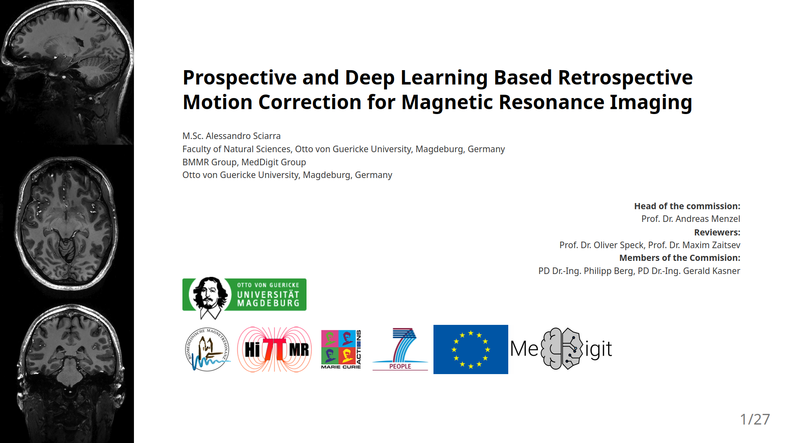
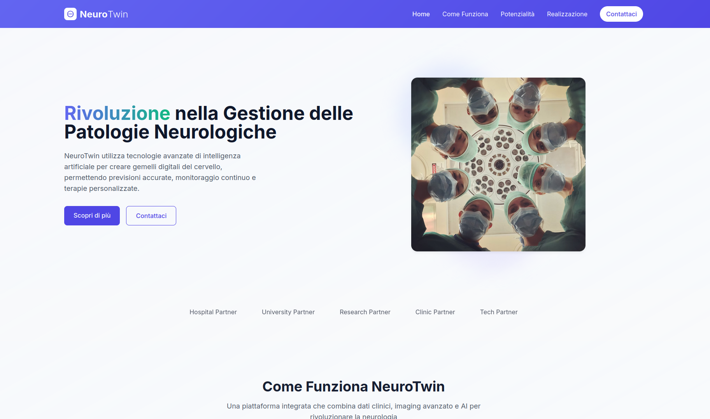

Projects

Malware AI-assisted Analysis Tool (MAIAT)
MAIAT is a versatile bash shell script designed to streamline the malware analysis process. It begins by ingesting any file type and swiftly gathering essential metadata such as file size, entropy, SHA hash values, etc.. Following this initial assessment, users can select a tailored static analysis based on the file type in question. Upon completion of the static analysis, the script facilitates the activation of an LLM-based assistant, enabling users to pose inquiries regarding the static analysis report. This innovative tool leverages the robust capabilities of LLMs within the Ollama framework, offering analysts the flexibility to choose from a variety of public models to enhance their malware investigation efforts.
Check it out!
SentimentAnalyzer
SentimentAnalyzer, a web application designed to decode the emotional content of tweets. It utilizes the "Emotion English DistilRoBERTa-base" model, seamlessly translates Italian tweets to English using the Ollama framework, and presents sentiment distribution in a captivating pie chart. Additionally, it saves analysis results to a CSV file for further exploration. Whether you're a sentiment seeker or a data enthusiast, SentimentAnalyzer has you covered! 🚀🔮
Check it out!
Tips and Tricks to improve Machine Learning Predictions
In this comprehensive presentation, we delve into the Machine Learning Performance Improvement Cheat Sheet, a curated collection of several actionable tips, tricks, and hacks designed to enhance the predictive power of machine learning models. Drawing from the expertise shared on Machine Learning Mastery, this presentation is structured to guide practitioners through a series of strategic improvements, spanning data handling, algorithm selection, model tuning, and ensemble methods. Each tip is meticulously detailed, providing attendees with a clear roadmap to overcome common obstacles and achieve breakthroughs in machine learning performance. Whether you're a seasoned data scientist or an aspiring machine learner, these insights are poised to elevate your predictive models to new heights of accuracy and efficiency.
Check it out!
Prospective and Deep Learning based Retrospective Motion Correction for Brain Magnetic Resonance Imaging
Prospective and Deep Learning based Retrospective Motion Correction for Brain Magnetic Resonance Imaging. Magnetic Resonance Imaging (MRI) is a crucial non-invasive medical imaging technique that, despite its advantages, suffers from motion-related artifacts due to long acquisition times. This thesis evaluates the effectiveness of prospective motion correction using an in-bore optical tracking system for high-resolution imaging at 7T MRI, focusing on various image weightings. Additionally, it explores deep learning approaches for retrospective motion artifact detection and correction, employing neural networks like Residual Network (ResNet) and U-Net. The work emphasizes the importance of image quality assessment through the Structural Similarity Index Measure (SSIM) in improving MRI outcomes.
Check it out!
NeuroTwin: Your Digital Twin for Precision Neurology
NeuroTwin is an advanced digital health platform designed to revolutionize the diagnosis and treatment of neurological conditions.
By leveraging cutting-edge artificial intelligence and medical imaging technologies, NeuroTwin creates dynamic digital replicas—“twins”—of a
patient's brain using data from MRI, EEG, CT scans, and clinical records. These personalized models enable precise tracking of disease progression,
predictive analytics for early intervention, and tailored therapeutic planning.
The system integrates a user-friendly dashboard for clinicians, offering intuitive visualization of complex neurological data,
real-time monitoring capabilities, and AI-powered decision support tools that enhance diagnostic accuracy and treatment efficacy.
Designed in collaboration with leading healthcare institutions, NeuroTwin aims to bridge the gap between research and clinical practice
by delivering actionable insights derived from large-scale data analysis while maintaining strict adherence to patient privacy and regulatory standards.